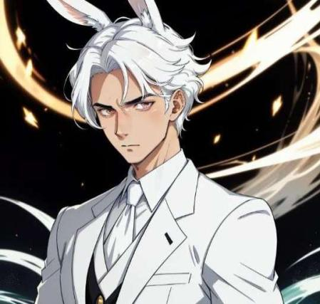

Sobre os Criadores
Como vocês já sabem ou não, a tripulação e a animação tem seus criadores, e como dá para perceber, essa página é apenas sobre eles, então, aqui vai uma descrição dos criadores sobre eles mesmos (exceto Jorge), espero que gostem.
JorgeBRJ
Conhecido como ex capitão da tripulação, JorgeBRJ é um grande amigo de Gyunt e o mesmo teve a idéia da criação da tripulação, entretanto como vocês bem sabem se leram a história, JorgeBRJ deixou a tripulação cair em esquecimento, e logo foi substituído por Gyunt que se tornou o novo capitão, atualmente JorgeBRJ não joga tanto blox fruits, a maior parte do tempo ele está jogando Fortnite.
Gyunt_Hunter
Bom, como eu posso dizer, eu acho que sou péssimo com apresentações mas vamos lá, tenho 16 anos, sou calmo, corajoso em certos momentos e um completo idiota para algumas coisas, quando eu substituí o JorgeBRJ o primeiro pensamento que me veio à mente foi que eu não conseguiria, e que novamente tudo ia se repetir, acabei esquecendo que tinha o apoio de todo munddo, mas felizmente, percebi isso e vi que não seria um monstro de 7 cabeças, e o tempo passou voando e já se passaram 9 meses desde a criação da tripulação.
Acho que tenho feito um bom trabalho até agora, o servidor tem expandido e mais membros se uniram à nós, espero que tudo continue à correr bem como sempre, talvez se nada de ruim acontecer nosso plano vai se concluir. ERRO... 826122... 717117202017...
Que estranho, bom, de qualquer forma, acho que já falei demais, nos vemos em breve companheiro.
Sealy
texto

Redblader
texto2
Edux
texto3